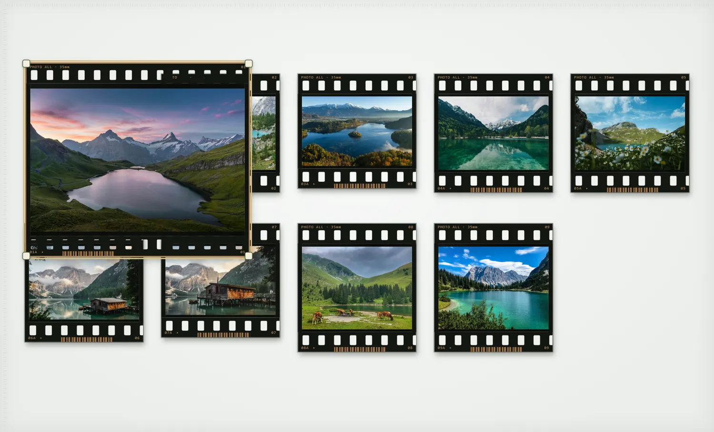
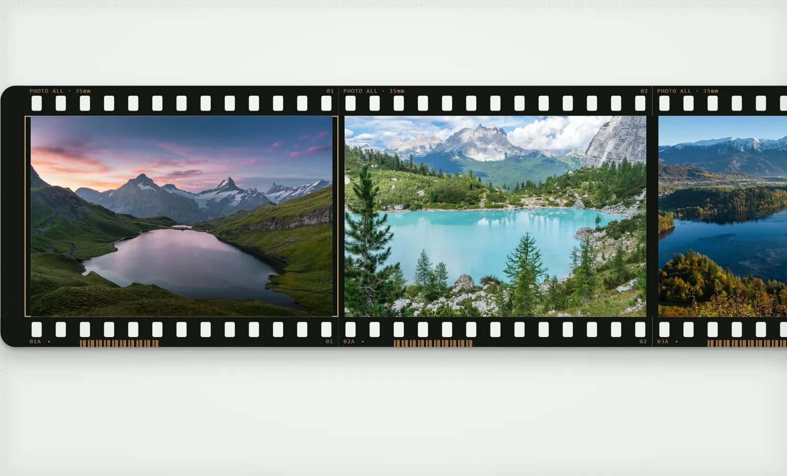
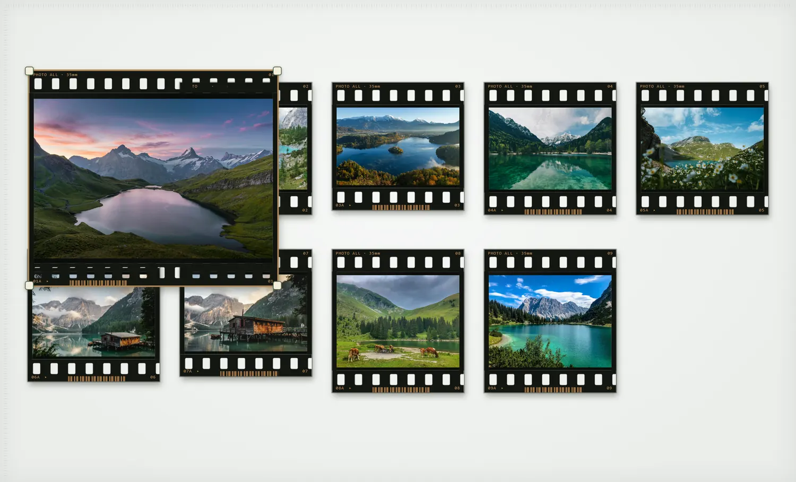
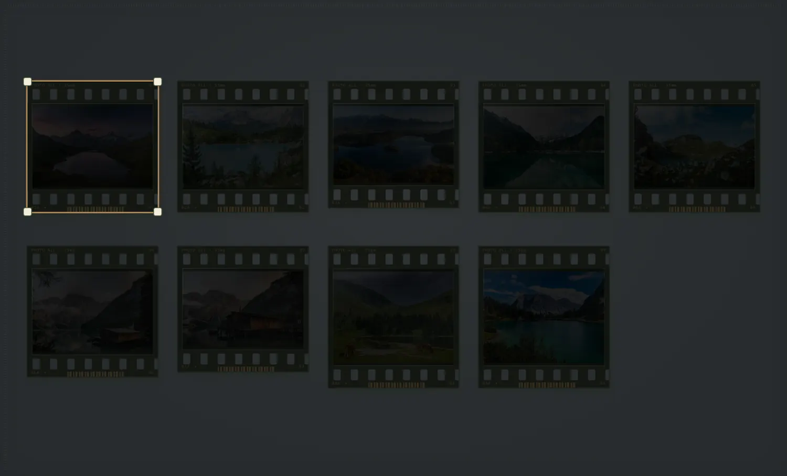
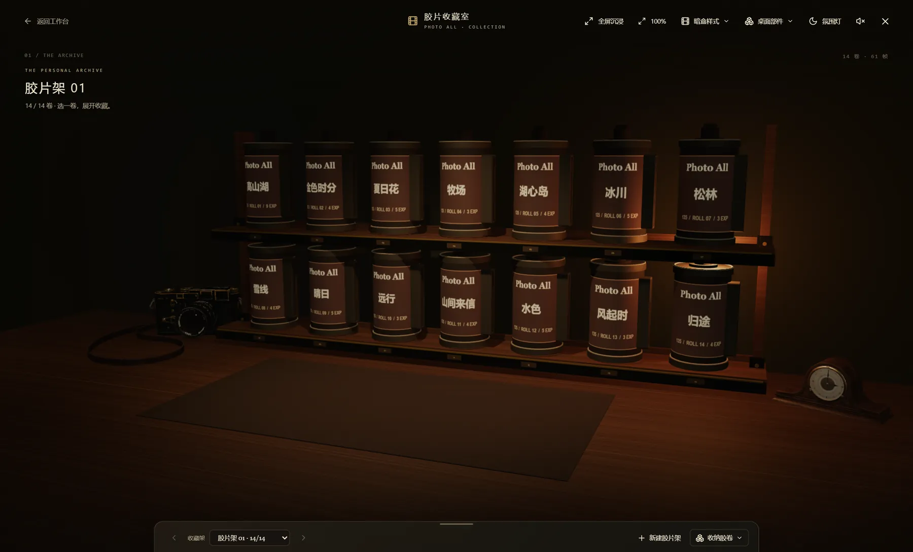

关于我
作品
Photo All Studio · Windows
I观片台 — 像看胶卷一样，重新看见照片
II
G自由摆片
拖动、逐张缩放、一键平铺。台面怎么摆，下次回来还是那样。
V拿起放大镜
V 键在鼠标位置开镜，倍率和镜片尺寸分开调，镜外还看得见整张台面。

C连续胶卷
首尾相接，横向滑动。可以自动播放，手一碰就停。

I只剩照片
按空格或碰到屏幕边缘才唤出工具，片孔、边框装饰都能关。

L关灯
关灯后照片只透一点光，底色有米黄、暖灰、灰黑，也能自定义。

⌂胶片收藏室
图集分卷收上三维胶卷架，每卷 36 帧。选一卷，暗盒落桌、胶片展开。
暗房 — 试一试真实的胶片 LUT
✦
原片
Kodak Portra 400
在照片上左右拖动，对比前后。
网页里是 17³ 降采样 LUT 和屏幕预览；软件里最多叠 16 层，按 33³ float32 完整精度导出。
调色 · 冲印 · 片边 — 让一组照片拥有同一种情绪
III- 126款开放 LUT
- 17款创意风格
- 16款 Spektrafilm 色彩
- 16层可叠加
先曝光，再冲印。照片先按片种的光谱数据曝光到胶片，再经放大机印到相纸 —— 不是简单套一层颜色。
- I胶片按片种的光谱灵敏度曝光
- II显影耦合剂、光晕、颗粒，在负片阶段就算进去
- III放大机调滤色、预闪和光源，像在暗房里校色
- IV相纸定下最后的反差和色调
给每张照片，配一条片边。
35mm、120、扫描毛边、幻灯片、相纸留白。卷名、日期、帧号和签名都能自己写，随照片一起导出。
- RAW
- 16-bit 导出
- 离线识图选片
Photo All · 胶片相机 · Android
IV装在手机里的胶片相机
按下快门，剩下的交给暗房。
取景时就能看到胶片效果。按下快门后，照片（默认 RAW）在手机 GPU 上冲洗：曝光到胶片、显影、再印放到相纸 —— 从 RAW 到成片约 3 秒。
- 22种胶片
- 9种相纸
- 416个创意 LUT
- ≈3sRAW 到成片
- 取景就是成片取景器实时预览胶片效果，和成片的亮度、色彩对得上。
- 快门变旋钮在快门上画圈调 LUT 强度，顺时针更浓、逆时针更淡，边转边看。
- 会收着打的闪光一帧环境光加一帧闪光，在 RAW 里重新配比，压暗背景、突出主体。
- 横过来就是机身横屏时左下角浮起一片发光扇形，点它切到带滚轮、刻度波轮和镜头盘的布局。
- 五套主题暗盒、暗房红灯（夜拍只用红光）、相纸、黄铜、冷银。
- 每一张都有档案相机、曝光、白平衡、对焦，冲洗引擎的每个决定，一键复制。
AI 虚拟主播
V联系
欢迎工作机会、科研交流与开源协作。